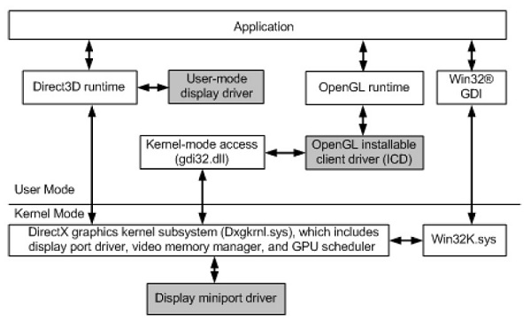

渲染管线之旅|01 软件调用栈
简介
通常我们可以很容易的找到我们的个人电脑中显卡驱动软件调用栈的相关内容（attache到进程上，查看进程调用的dll。），但是这些调用关系是如何工作？它们又是为什么要这样做呢？这些问题就不那么容易找到答案了。我会尽量填补空白，而不会对特定的硬件进行具体的描述。我将主要讨论在Windows系统上运行d3d9/10/11的GPU硬件，因为这是我最熟悉的（PC）技术栈(不是去解释API细节)。一旦我们真正使用了GPU，调用层级以及在每一层他们都在做什么就会变得非常重要。
这一篇中讲的主要就是这个图的结构，所以这个图非常的重要！ 
1 应用程序
应用程序指的是我们通常见到的D3D/OpenGL应用，比如CrossFire, LOL这些游戏，他们会使用D3D/OpenGL这类图形API。作为这些应用的开发者来说，要做的就是调用D3D/OpenGL提供的图形API接口，来实现自己想要的渲染效果。对于这些应用程序的开发者们来说，当他们的程序出现Bug的时候，就需要他们自己去查看D3D/OpenGL的接口文档，检查自己程序的实现进行Bug的修复，当然在极少数的情况下也可能出现文档的描述和实际不符和的情况，那么这就可能是更底层一点的问题。
2 API runtime
在初接触编程语言的时候我们就会经常的遇到Runtime这个词，中文中一般解释它为运行时环境。比如说我们用C语言调用了printf的时候，那么这个printf是从哪里来的呢？C Runtime! 对比起来，使用D3D/OpenGL API函数那就需要D3D/OpenGL的Runtime，Runtime一般是以动态库的方式存在，在程序运行的时候加载到应用程序的进程中。D3D/OpenGL应用程序中使用Runtime（d3d, OpenGL）提供的API进行资源创建/状态设置/绘制等等操作。Runtime 会根据应用程序设置的当前状态，验证调用参数的合法性，并进行一致性检查，管理用户可见资源。此外，可能还会验证着色器代码（Shader code）和各个Stage之间的着色器连接（至少d3d中会做这些工作, 在OpenGL中这部分工作由驱动程序来完成），然后将处理结果全部移交给显卡驱动程序——更准确地说，是用户态显卡驱动程序(UMD, user-mode driver)。
3 用户态显卡驱动程序 (UMD)
应用程序开发者有时候可能遇见这样的“诡异”现象，按照D3D/OpenGL的API使用指南调用的，但是渲染的效果却和理论上的不一致，或者是在一个厂商的显卡上渲染出来的是这种效果，换一个显卡发现渲染出来的效果却完全不一样。这些现象大多数都是在这里发生的。同时，UMD驱动也是CPU和GPU交互的重要地方。 如果你的应用程序因为API调用而出现了崩溃，问题通常就在这里——“nvd3dum.dll” (NVidia) or “atiumd.dll” (AMD)，其实可以使用调试工具看到crash在了那个dll层面上。这里只列出了NVidia和AMD，其实还有很多其他的显卡厂商。就像这些dll名字显示的，他们的名字中通常都带有um或者是umd, 这是意味着他们是User Mode Driver。UMD, 应用程序和API Runtime他们都处于相同的Context，和应用程序运行在相同的地址空间，不管是API Runtime或者是UMD，他们都是以dll的形式出现的，换句话说，在程序运行的过程中这些dll才会加载到应用程序的进程中的，所以他们是处在同一个进程空间的，那么他们肯定运行在相同的地址空间了。 UMD实现的是由d3d API Runtime调用的底层API（一般称之为 DDI）, 这些DDI与你表面上看到的API（应用程序调用的）非常相似，但是它更加细化了很多处理，比如内存管理等等。
在UMD模块中会处理类似于着色器编译的事情，现在的应用程序通常将比较复杂绚丽的特效都用shader来编写，其实这些shader就是在UMD中进行编译的。 对于Direct3D来说，d3d Runtime向umd传递一个预先验证的shader token数据流——D3D Runtime会检查shader的语法，并且会检查shader的编写是遵循D3D的规范的(类型的使用时正确的，使用的C#, T#, S# 和U#都不超过可用范围)。shader token中还使用到很多高级优化， 比如各种循环优化、死循环消除、持续传播、预测IFS等。使用shader token对于driver来说大有裨益。但是，它还应用了一系列较低级别的优化（如寄存器分配和循环展开），这些比较低级别的优化驱动程序一般都宁愿自己来做。概括的讲，驱动程序通常会将shader token立即转化为中间表示（IR），然后再进行编译；着色硬件与编译的d3d字节码非常接近。不需要额外工作一般就可以获得比较好的结果（而且HLSL编译器已经完成了一些高产量和高成本的优化，这是非常有帮助的）。
这里有个有意思的事情：如果你的应用是一款非常著名的游戏，那么NV/AMD的程序员们很可能已经看过你的Shader，他们为了让自己的显卡能更加流畅的运行你的应用程序，他们很可能会手动的替换你的Shader，这样做的前提是他们的Shader渲染的结果最好和你的Shader渲染的结果一样，不然这就闹笑话了。这里大家可以想到的就是各种跑分的软件了，很多厂商都会对跑分软件进行优化，为的就是达到很高的跑分，虽然这对于用户来讲并不是什么好事，但是高的跑分通常可以给显卡厂商带来更高的收益，因为这直接反应的就是他们的硬件性能。
更有趣的是：一些API状态可能最终会被编译到着色器中。举个例子，纹理采样器中可能没有实现某个相对奇特（或很少使用）的功能，比如说纹理边界，但在着色器中通常使用额外的代码进行模拟（或者根本不支持）。这意味着，对于不同的API状态组合，同一个shader有时会有多个版本的编译结果。
很多创建/编译Shader的工作都是由驱动程序启动的时候完成的，这也是为什么你打开游戏的时候通常会等待比较长时间的原因。只有在实际需要时才会执行需要的那些Shader（某些应用程序创建了很多的Shader, 但是有很多都是使用的垃圾！）。Graphics程序员知道的另外一面——如果你想确保某个东西是真的被创建的（而不是仅仅保留内存），你需要发出一个虚拟的绘制调用，使用它来“预热它”。这虽然看起来很挫，但自从1999年第一次开始使用3D硬件以来，情况就是这样的——也就是说，到目前为止，这几乎是生活中的一个事实，所以要习惯它。
还有内存管理之类的事情。UMD将获得诸如纹理创建命令之类的东西，并需要为它们提供空间。实际上，umd只是从kmd（内核模式驱动程序）中分配了一些更大的内存块；实际上，映射和取消映射页面（以及管理umd可以看到的那些显存，以及gpu可以访问哪些系统内存）是内核模式的特权，不能由umd完成。
但是UMD可以做一些像旋转纹理（除非GPU可以在硬件中这样做，通常使用的是2d传输单元而不是真正的3D管道）和系统内存和（映射的）显存等之间的调度传输。最重要的是，一旦kmd分配并移交命令缓冲区，它还可以编写命令缓冲区（一般称之为“dma buffer”——我将交替使用这两个名称）。命令缓冲区包含命令, 所有的状态更改和绘图操作都将由UMD转换为硬件能够理解的命令。还有很多你不需要手动触发的东西，比如上传纹理和材质到显存中。
一般来说，驱动程序将尽可能多地把实际的处理放到UMD中；UMD是用户模式代码，因此在其中运行的任何东西都不需要任何昂贵的内核模式转换，它可以自由地分配内存，将工作分配给多个线程，因为它只是一个常规的DLL（即使它是由API加载的，而不是直接通过你的应用程序）。这对驱动程序开发也有好处——如果UMD崩溃，应用程序也会崩溃，但不是整个系统，如果是KMD奔溃了那么面临的就是直接的蓝屏了；UMD可以在系统运行时被替换（它只是一个DLL！）；它可以使用常规调试器进行调试；所以它不仅效率高，而且调试和使用都方便。
前面我们已经说过UMD只是一个DLL。虽然这个dll是依靠D3D的runtime调用，而且可以直接和KMd进行交互，但它仍然是一个常规的dll，并且在调用它的进程的地址空间中运行。
我一直在说的这个“GPU”，他是所用应用共享的资源。然而，我们有多个应用程序试图访问它（并假装它们是唯一一个这样做的应用程序）。这不仅仅是自动的；在过去，解决方案是一次只给一个应用程序3D，而当这个应用程序处于活动状态时，其他所有应用程序都无法访问。但是，如果你想让你的窗口系统使用GPU进行渲染，这并不能真正解决问题。这就是为什么你需要一些组件来仲裁对GPU的访问并分配时间片等等。
4 进入调度器
调度器是一个系统组件，我在这里谈论的是图形调度程序，而不是CPU或IO调度程序。这和你想象的完全一样，它通过在不同的应用程序之间对3D管道进行时间切片来仲裁对它的访问。上下文切换至少会导致GPU的一些状态切换（它为命令缓冲区生成额外的命令），并且可能还会交换显存中或内存中的一些资源。当然，在任何给定的时间，只有一个进程能够真正地向3D管道提交命令。 你经常会发现控制台程序员抱怨PC上的3d API的多层次、易操作性由此带来的性能成本。但问题是，PC上的3D API驱动程序确实比控制台游戏有更复杂的问题要解决——例如，它们确实需要跟踪完整的当前状态，因为有人可能随时从它们下面拉出隐藏的画面！他们还围绕着坏掉的应用程序工作，并试图在背后解决性能问题；这是一个没有人满意的非常恼人的做法，当然包括驱动程序作者自己。但事实是，业务场景在这理显得更为重要；人们希望运行的东西继续运行（并且运行得很顺利）。你只是喊着“这是错误的”，不会赢得任何朋友。不管怎么说，在运行流程上走进下一站：内核模式驱动！
5 内核态显卡驱动程序
内核态显卡驱动程序一般简称为KMD, （The kernel-mode driver, KMD）。 KMD是实际处理硬件的部分。系统中一次可能有多个UMD实例在运行，但KMD却只有一个，如果KMD崩溃了，那么Boom, 就直接的蓝屏了。 即使有多个应用程序在争夺它，GPU的内存也只有一个。有人需要调用快照并实际分配（和映射）物理内存。同样，有人必须在启动时初始化GPU，设置显示模式（并从显示器中获取模式信息），管理硬件鼠标光标，这是有硬件处理的，而且真的只有一个！对硬件看门狗定时器进行编程，以便GPU能在一定时间内无响应、响应中断等情况下（一般讲这种状态称之为hang）重置。这些就是KMD所做的。 对我们来说最重要的是，kmd管理实际的命令缓冲区。这个命令缓冲区就是硬件实际消耗的那个。UMD产生的命令缓冲并不是真正的缓冲区——事实上，它们只是GPU可寻址内存的随机切片。它们实际发生的情况是，UMD完成它们，将它们提交给调度程序，然后等待该进程启动，然后将UMD命令缓冲区传递给kmd。然后，kmd将对命令缓冲区的调用写入主命令缓冲区，根据GPU命令处理器是否可以从主内存中读取，它可能还需要首先将其DMA到视频内存中。主命令缓冲区通常是一个相当小的环缓冲区（Ring buffer）——在那里唯一能被写入的东西就是系统/初始化命令和对“真实的”丰富的3D命令缓冲区的调用。 Ring buffer仍然只是内存中的一个缓冲区。显卡知道Ring buffer的位置——通常有一个读指针，它是GPU在主命令缓冲区中的位置，还有一个写指针，它是KMD写入缓冲区的距离（或者更准确地说，它告诉GPU它已经写入的命令的数量）。
6 总线
当然，CMD不会直接进入显卡，除非它集成在CPU芯片上！，因为它需要先通过总线——通常是现在的PCI Express。DMA传输等采用相同的路径。这不需要很长时间，但这是我们命令流进入的的另一个阶段。
7 命令解析器
这是GPU的前端——实际读取KMD写入的命令的部分。我将在下一期文章中从这里继续，因为这篇文章已经足够长了。
8 顺带说说OpenGL
OpenGL与我刚才描述的非常相似，只是API和UMD层之间没有那么明显的区别。与d3d不同，glsl的shader编译不由API处理，而是由驱动程序完成。这带来的一个不幸副作用是，GLSL前端和3D硬件供应商一样多，也就是说每个显卡的厂商都要实现他们自己的GLSL的前端编译。虽然它们都基于相同的规范，但都有自己的缺陷和特性。这也意味着驱动程序必须在看到着色器时自己进行所有优化——包括昂贵的优化。对于这个问题，d3d字节码格式确实是一个更干净的解决方案——只有一个编译器（所以不同供应商之间没有稍微不兼容的方言！）它允许进行比通常情况下更昂贵的数据流分析。
9 遗漏
本片文章只是一个概述，忽略了很多微妙之处。例如，不仅有一个调度程序，还有多个实现（驱动程序可以选择）；还有关于如何处理CPU和GPU之间的同步的整个问题到目前为止还没有解释过。后续的文章中慢慢的将这些都补上了。
- 原文作者：Binean
- 原文链接：https://bzhou830.github.io/post/20190703%E6%B8%B2%E6%9F%93%E7%AE%A1%E7%BA%BF%E4%B9%8B%E6%97%8501/
- 版权声明：本作品采用知识共享署名-非商业性使用-禁止演绎 4.0 国际许可协议进行许可，非商业转载请注明出处（作者，原文链接），商业转载请联系作者获得授权。